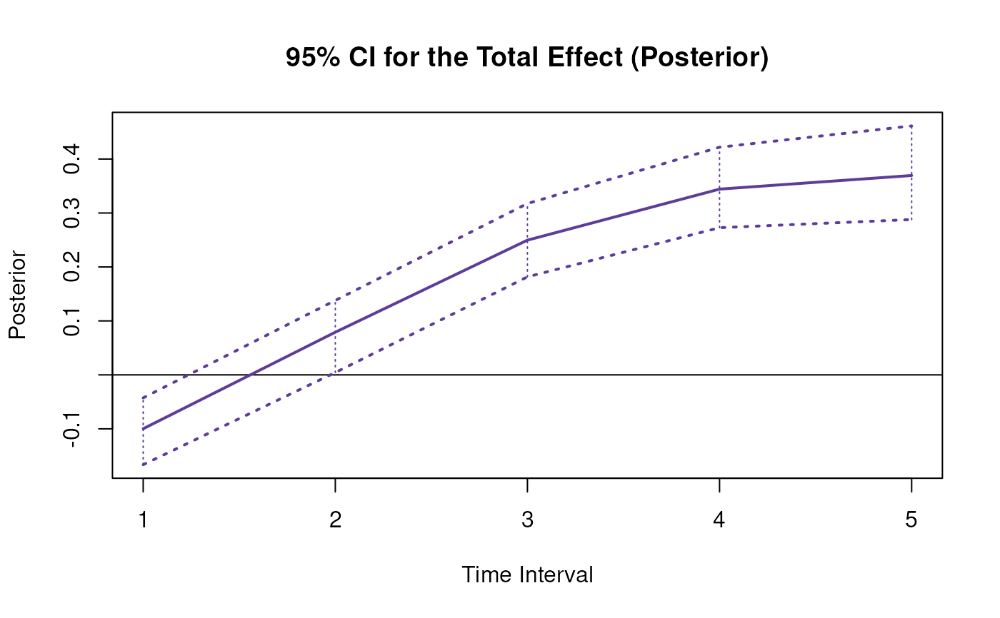
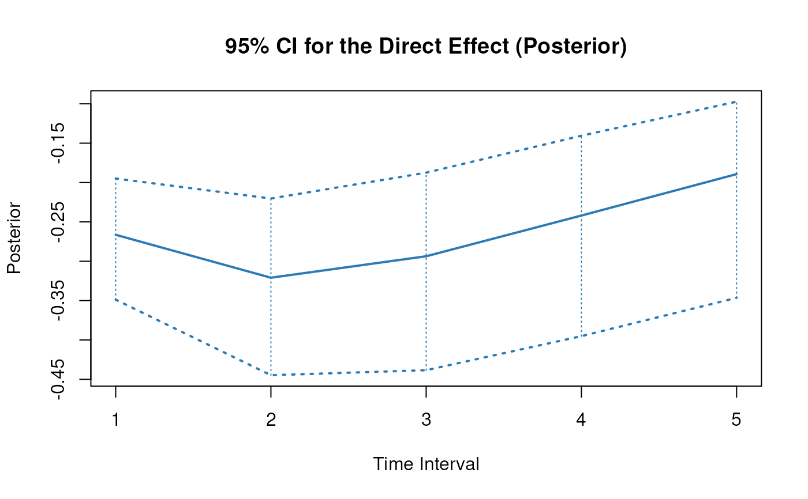

Posterior Distribution of Total, Direct, and Indirect Effects of X on Y Through M Over a Specific Time-Interval
Source:R/cTMed-posterior-med.R
PosteriorMed.RdThis function generates a posterior distribution of the total, direct and indirect effects of the independent variable \(X\) on the dependent variable \(Y\) through mediator variables \(\mathbf{m}\) at a particular time-interval \(\Delta t\) using the posterior distribution of the first-order stochastic differential equation model drift matrix \(\boldsymbol{\Phi}\).
Arguments
- phi
List of numeric matrices. Each element of the list is a sample from the posterior distribution of the drift matrix (\(\boldsymbol{\Phi}\)). Each matrix should have row and column names pertaining to the variables in the system.
- delta_t
Numeric. Time interval (\(\Delta t\)).
- from
Character string. Name of the independent variable \(X\) in
phi.- to
Character string. Name of the dependent variable \(Y\) in
phi.- med
Character vector. Name/s of the mediator variable/s in
phi.- ncores
Positive integer. Number of cores to use. If
ncores = NULL, use a single core. Consider using multiple cores when number of replicationsRis a large value.
Value
Returns an object
of class ctmedmc which is a list with the following elements:
- call
Function call.
- args
Function arguments.
- fun
Function used (PosteriorMed).
- output
A list with length of
length(delta_t).
Each element in the output list has the following elements:
- est
Mean of the posterior distribution of the total, direct, and indirect effects.
- thetahatstar
Posterior distribution of the total, direct, and indirect effects.
Details
See Total(),
Direct(), and
Indirect() for more details.
References
Bollen, K. A. (1987). Total, direct, and indirect effects in structural equation models. Sociological Methodology, 17, 37. doi:10.2307/271028
Deboeck, P. R., & Preacher, K. J. (2015). No need to be discrete: A method for continuous time mediation analysis. Structural Equation Modeling: A Multidisciplinary Journal, 23 (1), 61–75. doi:10.1080/10705511.2014.973960
Ryan, O., & Hamaker, E. L. (2021). Time to intervene: A continuous-time approach to network analysis and centrality. Psychometrika, 87 (1), 214–252. doi:10.1007/s11336-021-09767-0
Examples
phi <- matrix(
data = c(
-0.357, 0.771, -0.450,
0.0, -0.511, 0.729,
0, 0, -0.693
),
nrow = 3
)
colnames(phi) <- rownames(phi) <- c("x", "m", "y")
phi <- MCPhi(
phi = phi,
vcov_phi_vec = 0.1 * diag(9),
R = 100L # use a large value for R in actual research
)$output
# Specific time-interval ----------------------------------------------------
PosteriorMed(
phi = phi,
delta_t = 1,
from = "x",
to = "y",
med = "m"
)
#> $`1`
#> interval est se R 2.5% 97.5%
#> total 1 -0.0663 0.2002 100 -0.4239 0.3153
#> direct 1 -0.2163 0.1913 100 -0.5498 0.1594
#> indirect 1 0.1500 0.1026 100 -0.0011 0.4358
#>
# Range of time-intervals ---------------------------------------------------
posterior <- PosteriorMed(
phi = phi,
delta_t = 1:20,
from = "x",
to = "y",
med = "m"
)
# Methods -------------------------------------------------------------------
# PosteriorMed has a number of methods including
# print, summary, confint, and plot
print(posterior)
#> $`1`
#> interval est se R 2.5% 97.5%
#> total 1 -0.0663 0.2002 100 -0.4239 0.3153
#> direct 1 -0.2163 0.1913 100 -0.5498 0.1594
#> indirect 1 0.1500 0.1026 100 -0.0011 0.4358
#>
#> $`2`
#> interval est se R 2.5% 97.5%
#> total 2 0.0906 0.3098 100 -0.5746 0.6958
#> direct 2 -0.2609 0.2704 100 -0.8498 0.1805
#> indirect 2 0.3515 0.2662 100 -0.0060 1.0503
#>
#> $`3`
#> interval est se R 2.5% 97.5%
#> total 3 0.2029 0.3627 100 -0.6059 0.9461
#> direct 3 -0.2554 0.3273 100 -1.0098 0.1665
#> indirect 3 0.4583 0.3928 100 -0.0077 1.2430
#>
#> $`4`
#> interval est se R 2.5% 97.5%
#> total 4 0.2267 0.3608 100 -0.5552 0.9351
#> direct 4 -0.2420 0.3864 100 -1.1261 0.1400
#> indirect 4 0.4687 0.4758 100 -0.0096 1.2034
#>
#> $`5`
#> interval est se R 2.5% 97.5%
#> total 5 0.1909 0.3319 100 -0.5079 0.7811
#> direct 5 -0.2341 0.4595 100 -1.2474 0.1124
#> indirect 5 0.4250 0.5434 100 -0.0208 1.4488
#>
#> $`6`
#> interval est se R 2.5% 97.5%
#> total 6 0.1343 0.3006 100 -0.4715 0.8111
#> direct 6 -0.2352 0.5585 100 -1.4149 0.0897
#> indirect 6 0.3695 0.6199 100 -0.1028 1.6161
#>
#> $`7`
#> interval est se R 2.5% 97.5%
#> total 7 0.0840 0.2767 100 -0.4608 0.7527
#> direct 7 -0.2459 0.6972 100 -1.6258 0.0678
#> indirect 7 0.3299 0.7259 100 -0.2704 1.7413
#>
#> $`8`
#> interval est se R 2.5% 97.5%
#> total 8 0.0517 0.2631 100 -0.4720 0.7403
#> direct 8 -0.2669 0.8923 100 -1.8422 0.0552
#> indirect 8 0.3186 0.8886 100 -0.2431 1.9354
#>
#> $`9`
#> interval est se R 2.5% 97.5%
#> total 9 0.0376 0.2575 100 -0.5206 0.6966
#> direct 9 -0.2993 1.1650 100 -2.1093 0.0460
#> indirect 9 0.3368 1.1393 100 -0.1402 2.1837
#>
#> $`10`
#> interval est se R 2.5% 97.5%
#> total 10 0.0358 0.2492 100 -0.4731 0.6284
#> direct 10 -0.3453 1.5433 100 -2.4098 0.0385
#> indirect 10 0.3811 1.5093 100 -0.1732 2.4924
#>
#> $`11`
#> interval est se R 2.5% 97.5%
#> total 11 0.0393 0.2268 100 -0.3797 0.5641
#> direct 11 -0.4085 2.0647 100 -2.7491 0.0329
#> indirect 11 0.4477 2.0341 100 -0.1625 2.8710
#>
#> $`12`
#> interval est se R 2.5% 97.5%
#> total 12 0.0423 0.1911 100 -0.3326 0.5419
#> direct 12 -0.4939 2.7803 100 -3.1326 0.0280
#> indirect 12 0.5361 2.7610 100 -0.1188 3.3259
#>
#> $`13`
#> interval est se R 2.5% 97.5%
#> total 13 0.0420 0.1603 100 -0.2069 0.5188
#> direct 13 -0.6084 3.7599 100 -3.5671 0.0231
#> indirect 13 0.6504 3.7551 100 -0.1015 3.8107
#>
#> $`14`
#> interval est se R 2.5% 97.5%
#> total 14 0.0382 0.1550 100 -0.1780 0.4695
#> direct 14 -0.7619 5.0987 100 -4.0598 0.0191
#> indirect 14 0.8001 5.1063 100 -0.0898 4.2987
#>
#> $`15`
#> interval est se R 2.5% 97.5%
#> total 15 0.0325 0.1638 100 -0.2446 0.4721
#> direct 15 -0.9674 6.9265 100 -4.6191 0.0158
#> indirect 15 0.9999 6.9408 100 -0.1064 4.8460
#>
#> $`16`
#> interval est se R 2.5% 97.5%
#> total 16 0.0264 0.1612 100 -0.2405 0.4490
#> direct 16 -1.2431 9.4202 100 -5.2542 0.0131
#> indirect 16 1.2695 9.4347 100 -0.0991 5.4632
#>
#> $`17`
#> interval est se R 2.5% 97.5%
#> total 17 0.0210 0.1414 100 -0.2212 0.4266
#> direct 17 -1.6134 12.8212 100 -5.9758 0.0108
#> indirect 17 1.6344 12.8311 100 -0.0868 6.1619
#>
#> $`18`
#> interval est se R 2.5% 97.5%
#> total 18 0.0166 0.1209 100 -0.1929 0.3485
#> direct 18 -2.1117 17.4586 100 -6.7958 0.0090
#> indirect 18 2.1282 17.4618 100 -0.0959 6.9557
#>
#> $`19`
#> interval est se R 2.5% 97.5%
#> total 19 0.0125 0.1190 100 -0.2074 0.3355
#> direct 19 -2.7833 23.7808 100 -7.7278 0.0075
#> indirect 19 2.7959 23.7779 100 -0.1422 7.8622
#>
#> $`20`
#> interval est se R 2.5% 97.5%
#> total 20 0.0085 0.1277 100 -0.2735 0.3643
#> direct 20 -3.6902 32.3989 100 -8.7873 0.0077
#> indirect 20 3.6987 32.3920 100 -0.1749 8.8952
#>
summary(posterior)
#> effect interval est se R 2.5% 97.5%
#> 1 total 1 -0.066299824 0.2002153 100 -0.423902167 0.315339143
#> 2 direct 1 -0.216303593 0.1913433 100 -0.549764444 0.159415215
#> 3 indirect 1 0.150003769 0.1026246 100 -0.001094792 0.435816958
#> 4 total 2 0.090623284 0.3098150 100 -0.574557772 0.695774560
#> 5 direct 2 -0.260851517 0.2703970 100 -0.849788233 0.180494187
#> 6 indirect 2 0.351474801 0.2662111 100 -0.005964304 1.050268207
#> 7 total 3 0.202907972 0.3626896 100 -0.605916962 0.946091905
#> 8 direct 3 -0.255352776 0.3273100 100 -1.009805677 0.166471204
#> 9 indirect 3 0.458260748 0.3927837 100 -0.007687814 1.243027010
#> 10 total 4 0.226724362 0.3607985 100 -0.555156747 0.935113021
#> 11 direct 4 -0.241997321 0.3863791 100 -1.126149870 0.140026494
#> 12 indirect 4 0.468721683 0.4757500 100 -0.009594575 1.203388302
#> 13 total 5 0.190853358 0.3319103 100 -0.507866028 0.781096912
#> 14 direct 5 -0.234119836 0.4595047 100 -1.247443137 0.112373262
#> 15 indirect 5 0.424973194 0.5433786 100 -0.020795707 1.448836101
#> 16 total 6 0.134273125 0.3006482 100 -0.471516073 0.811063303
#> 17 direct 6 -0.235192881 0.5585085 100 -1.414894836 0.089660158
#> 18 indirect 6 0.369466006 0.6199379 100 -0.102794951 1.616056598
#> 19 total 7 0.084010223 0.2767290 100 -0.460763031 0.752679592
#> 20 direct 7 -0.245937093 0.6971985 100 -1.625807017 0.067769068
#> 21 indirect 7 0.329947316 0.7259352 100 -0.270352819 1.741327758
#> 22 total 8 0.051707958 0.2631037 100 -0.472037218 0.740316973
#> 23 direct 8 -0.266885138 0.8923068 100 -1.842225146 0.055156302
#> 24 indirect 8 0.318593095 0.8886201 100 -0.243096479 1.935449809
#> 25 total 9 0.037563250 0.2574818 100 -0.520622866 0.696635088
#> 26 direct 9 -0.299258739 1.1650312 100 -2.109254015 0.045967636
#> 27 indirect 9 0.336821989 1.1393231 100 -0.140185488 2.183700525
#> 28 total 10 0.035805191 0.2491935 100 -0.473145512 0.628447278
#> 29 direct 10 -0.345297129 1.5432868 100 -2.409785737 0.038534861
#> 30 indirect 10 0.381102320 1.5092691 100 -0.173167583 2.492382582
#> 31 total 11 0.039257725 0.2268342 100 -0.379725365 0.564119707
#> 32 direct 11 -0.408485075 2.0646709 100 -2.749078903 0.032948914
#> 33 indirect 11 0.447742799 2.0340666 100 -0.162533908 2.871021340
#> 34 total 12 0.042271436 0.1910646 100 -0.332642703 0.541851863
#> 35 direct 12 -0.493853932 2.7803110 100 -3.132647246 0.027992313
#> 36 indirect 12 0.536125368 2.7610201 100 -0.118786071 3.325920299
#> 37 total 13 0.041996290 0.1603036 100 -0.206949476 0.518820839
#> 38 direct 13 -0.608430287 3.7599417 100 -3.567098417 0.023096112
#> 39 indirect 13 0.650426577 3.7551020 100 -0.101468323 3.810662550
#> 40 total 14 0.038249307 0.1549927 100 -0.178012854 0.469494377
#> 41 direct 14 -0.761883321 5.0987191 100 -4.059806294 0.019109227
#> 42 indirect 14 0.800132628 5.1063363 100 -0.089772180 4.298706305
#> 43 total 15 0.032462623 0.1638376 100 -0.244635705 0.472072140
#> 44 direct 15 -0.967430894 6.9264536 100 -4.619054406 0.015773478
#> 45 indirect 15 0.999893516 6.9408057 100 -0.106373135 4.846016796
#> 46 total 16 0.026366357 0.1612118 100 -0.240491247 0.449038472
#> 47 direct 16 -1.243088331 9.4201706 100 -5.254187032 0.013058990
#> 48 indirect 16 1.269454688 9.4346929 100 -0.099052246 5.463161869
#> 49 total 17 0.021023782 0.1413955 100 -0.221161554 0.426589992
#> 50 direct 17 -1.613378190 12.8212234 100 -5.975773323 0.010825324
#> 51 indirect 17 1.634401972 12.8311022 100 -0.086842612 6.161926867
#> 52 total 18 0.016557857 0.1209461 100 -0.192907314 0.348456163
#> 53 direct 18 -2.111664824 17.4586152 100 -6.795788795 0.008985049
#> 54 indirect 18 2.128222681 17.4618484 100 -0.095896897 6.955688267
#> 55 total 19 0.012517173 0.1189947 100 -0.207440634 0.335474762
#> 56 direct 19 -2.783338385 23.7807864 100 -7.727818114 0.007466850
#> 57 indirect 19 2.795855558 23.7778854 100 -0.142215005 7.862230576
#> 58 total 20 0.008522724 0.1277064 100 -0.273460552 0.364275008
#> 59 direct 20 -3.690155034 32.3989374 100 -8.787283115 0.007697666
#> 60 indirect 20 3.698677758 32.3920413 100 -0.174913646 8.895211276
confint(posterior, level = 0.95)
#> effect interval 2.5 % 97.5 %
#> 1 total 1 -0.423902167 0.315339143
#> 2 direct 1 -0.549764444 0.159415215
#> 3 indirect 1 -0.001094792 0.435816958
#> 4 total 2 -0.574557772 0.695774560
#> 5 direct 2 -0.849788233 0.180494187
#> 6 indirect 2 -0.005964304 1.050268207
#> 7 total 3 -0.605916962 0.946091905
#> 8 direct 3 -1.009805677 0.166471204
#> 9 indirect 3 -0.007687814 1.243027010
#> 10 total 4 -0.555156747 0.935113021
#> 11 direct 4 -1.126149870 0.140026494
#> 12 indirect 4 -0.009594575 1.203388302
#> 13 total 5 -0.507866028 0.781096912
#> 14 direct 5 -1.247443137 0.112373262
#> 15 indirect 5 -0.020795707 1.448836101
#> 16 total 6 -0.471516073 0.811063303
#> 17 direct 6 -1.414894836 0.089660158
#> 18 indirect 6 -0.102794951 1.616056598
#> 19 total 7 -0.460763031 0.752679592
#> 20 direct 7 -1.625807017 0.067769068
#> 21 indirect 7 -0.270352819 1.741327758
#> 22 total 8 -0.472037218 0.740316973
#> 23 direct 8 -1.842225146 0.055156302
#> 24 indirect 8 -0.243096479 1.935449809
#> 25 total 9 -0.520622866 0.696635088
#> 26 direct 9 -2.109254015 0.045967636
#> 27 indirect 9 -0.140185488 2.183700525
#> 28 total 10 -0.473145512 0.628447278
#> 29 direct 10 -2.409785737 0.038534861
#> 30 indirect 10 -0.173167583 2.492382582
#> 31 total 11 -0.379725365 0.564119707
#> 32 direct 11 -2.749078903 0.032948914
#> 33 indirect 11 -0.162533908 2.871021340
#> 34 total 12 -0.332642703 0.541851863
#> 35 direct 12 -3.132647246 0.027992313
#> 36 indirect 12 -0.118786071 3.325920299
#> 37 total 13 -0.206949476 0.518820839
#> 38 direct 13 -3.567098417 0.023096112
#> 39 indirect 13 -0.101468323 3.810662550
#> 40 total 14 -0.178012854 0.469494377
#> 41 direct 14 -4.059806294 0.019109227
#> 42 indirect 14 -0.089772180 4.298706305
#> 43 total 15 -0.244635705 0.472072140
#> 44 direct 15 -4.619054406 0.015773478
#> 45 indirect 15 -0.106373135 4.846016796
#> 46 total 16 -0.240491247 0.449038472
#> 47 direct 16 -5.254187032 0.013058990
#> 48 indirect 16 -0.099052246 5.463161869
#> 49 total 17 -0.221161554 0.426589992
#> 50 direct 17 -5.975773323 0.010825324
#> 51 indirect 17 -0.086842612 6.161926867
#> 52 total 18 -0.192907314 0.348456163
#> 53 direct 18 -6.795788795 0.008985049
#> 54 indirect 18 -0.095896897 6.955688267
#> 55 total 19 -0.207440634 0.335474762
#> 56 direct 19 -7.727818114 0.007466850
#> 57 indirect 19 -0.142215005 7.862230576
#> 58 total 20 -0.273460552 0.364275008
#> 59 direct 20 -8.787283115 0.007697666
#> 60 indirect 20 -0.174913646 8.895211276
plot(posterior)

